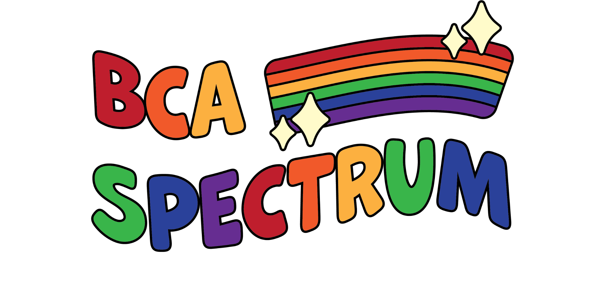
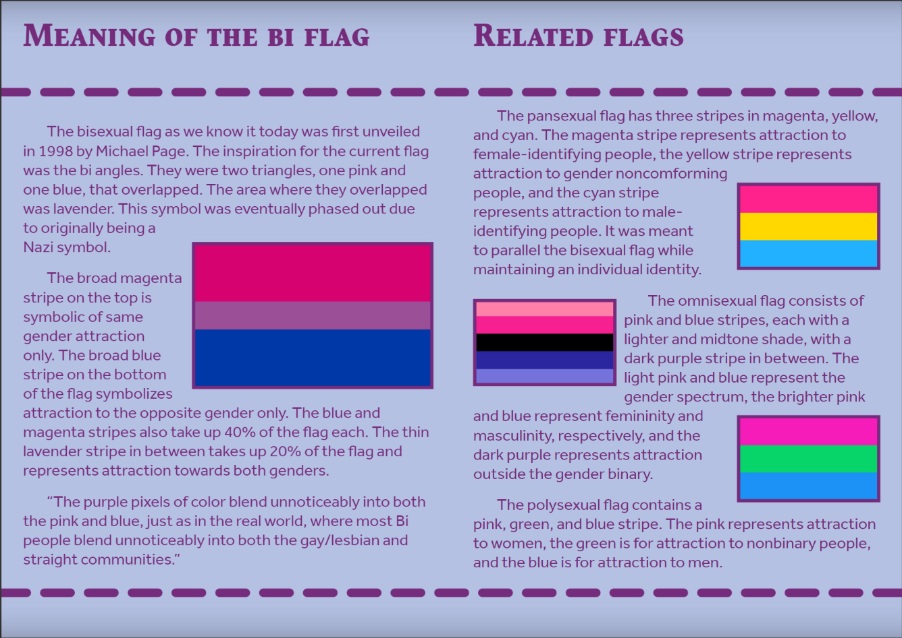

ABOUT
What is Spectrum?
SPECTRUM serves as a safe space for LGBTQ+ students in BCA and plans to work with administration to improve the experience at BCA for LGBTQ+ students. Members will get to learn about important LGBTQ+ history/current events and host fundraisers to raise money for LGBTQ+ organizations.
Our Goals
- Offer a safe social space for LGBTQ+ students.
- Aim to educate the larger BCA Community about important LGBTQ+ current events and important information
- through zines or on social media.
- We fundraise for outside organizations and support groups.
- Provide an additional environment for acceptance.
- We advocate to the administration for any impending issues that negatively impact specifically members of
- our community.
Contact Us!
SPECTRUM is run by two Co-Presidents, Matt Diomidous (He/Him) and Maria Roberts (She/They). They are both members of the Class of 2024. Their emails are, respectively, matdio24@bergen.org and marrob24@bergen.org. The club’s Instagram is @bcaspectrum.